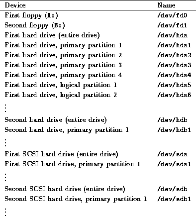
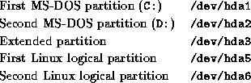

Many distributions require you to create Linux partitions by hand using the fdisk program. Others may automatically create partitions for you. Either way, you should know the following information about Linux partitions and device names.
Drives and partitions under Linux are given different names than their counterparts under other operating systems. Under MS-DOS, floppy drives are referred to as A: and B:, while hard drive partitions are named C:, D:, and so on. Under Linux, the naming convention is quite different.
Device drivers, found in the directory /dev, are used to communicate with devices on your system (such as hard drives, mice, and so on). For example, if you have a mouse on your system, you access it through the driver /dev/mouse. Floppy drives, hard drives, and individual partitions are all given individual device drivers of their own. Don't worry about the device driver interface for now; it is important only to understand how the various devices are named in order to use them.
Table 2.1 lists the names of these various device drivers.

Table 2.1: Linux partition names
A few notes about this table. Note that /dev/fd0 corresponds to the first floppy drive (A: under MS-DOS) and /dev/fd1 corresponds to the second floppy (B:).
Also, SCSI hard drives are named differently than other drives. IDE, MFM, and RLL drives are accessed through the devices /dev/hda, /dev/hdb, and so on. The individual partitions on the drive /dev/hda are /dev/hda1, /dev/hda2, and so on. However, SCSI drives are named /dev/sda, /dev/sdb, etc., with partition names such as /dev/sda1 and /dev/sda2.
Here's an example. Let's say that you have a single IDE hard drive, with 3 primary partitions. The first two are set aside for MS-DOS, and the third is an extended partition which contains two logical partitions, both for use by Linux. The devices referring to these partitions would be:

Note that /dev/hda4 is skipped; it corresponds to the fourth primary partition, which we don't have in this example. Logical partitions are named consecutively starting with /dev/hda5.